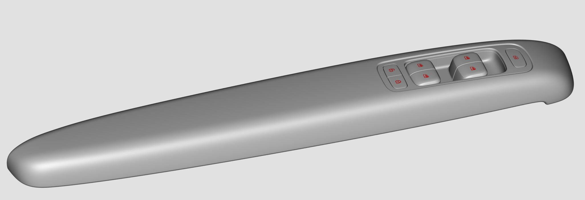
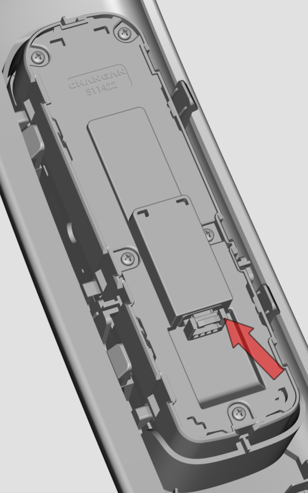
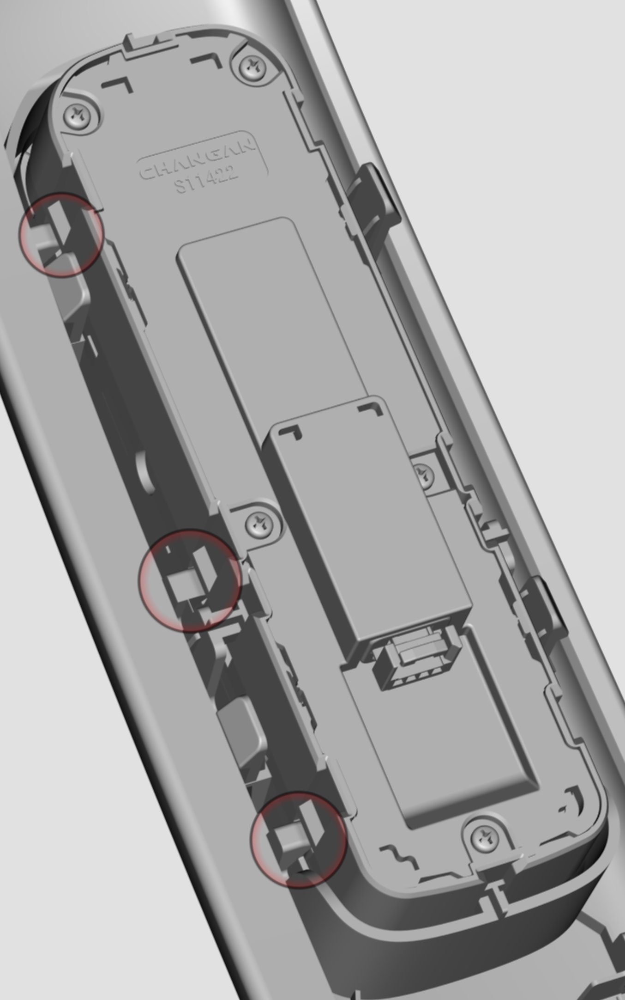
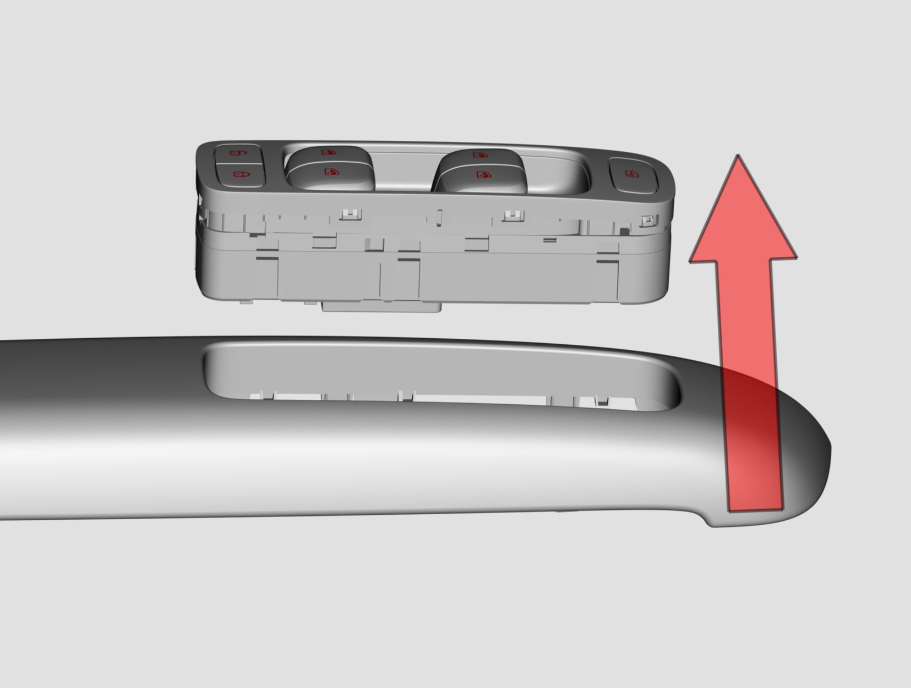
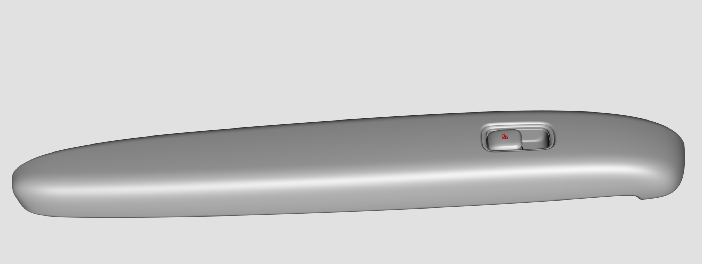
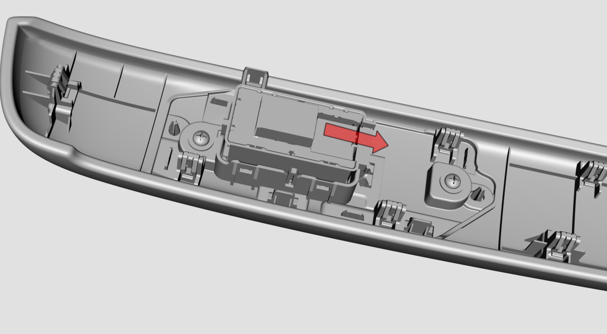
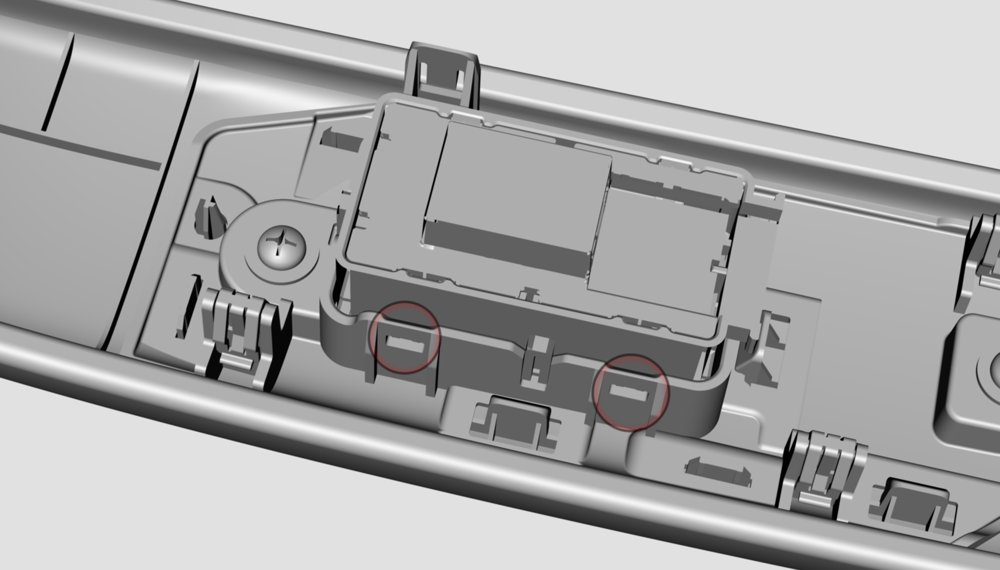
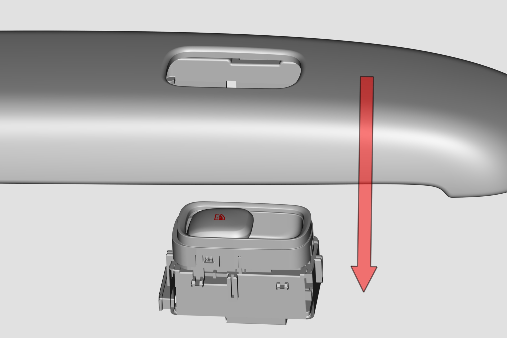

拆卸与安装
主驾车窗开关拆卸、安装的方法。
拆卸车窗开关前，需先将扶手面板拆除，具体参见 拆卸与安装前门内饰板 章节；

拔出接插件；

使用取卡器，松动车窗开关和扶手板间的卡扣(左右卡扣位置对称，共6个），从扶手正面拆卸下车窗开关；


安装顺序与拆卸顺序相反。
副驾车窗开关拆卸、安装的方法。
拆卸车窗开关前，需先将扶手面板拆除，具体参见 拆卸与安装前门内饰板 章节；

拔出接插件；

使用取卡器，松动车窗开关和扶手板间的卡扣(左右卡扣位置对称，共4个），从扶手底部拆卸下车窗开关；


安装顺序与拆卸顺序相反。